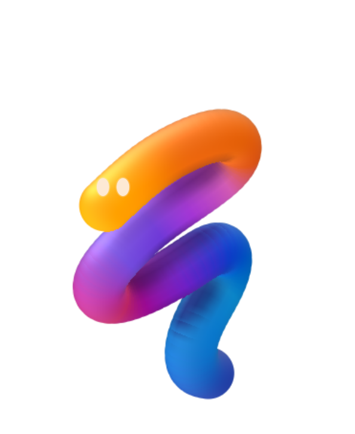
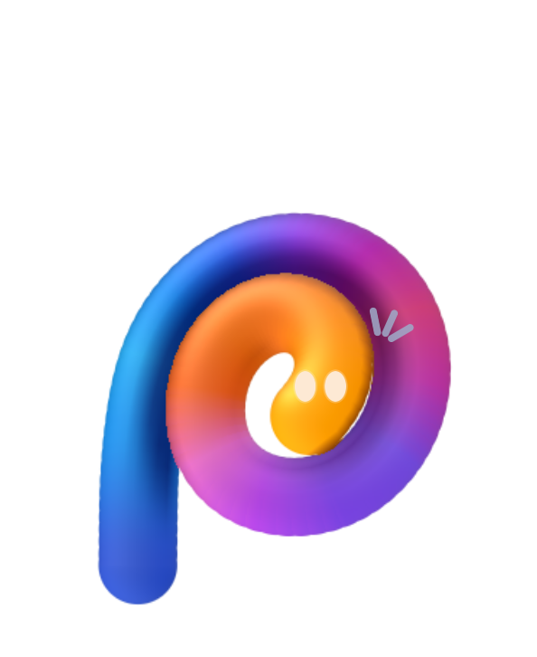

?Une scène qui occupe tout l’écran. Un seul bouton principal, le chat s’ouvre à la demande. Le plus proche de l’esprit Chums.
La même présence en plein écran, sur un fond chaud et clair. Les couleurs du personnage ressortent, l’interface devient plus douce.
Retrouve où on en était.
HERMÈSOn peut reprendre la même conversation ici. Dis-moi ce que tu veux faire ensuite.
Le personnage reste grand en haut, le dernier échange reste lisible en bas. Plus pratique pour suivre une tâche, moins immersif que A.
Au repos, « Parler ». S’il attend une réponse, Noodle change de pose avec un « ? ». Des transitions courtes à l’actualisation, selon watchOS.

?Maquettes de proposition, pas l’interface déjà installée. Les poses sont rendues avec le moteur Chums existant. Les exemples de texte sont fictifs. Le cadran ne joue pas l’animation continue de l’app.